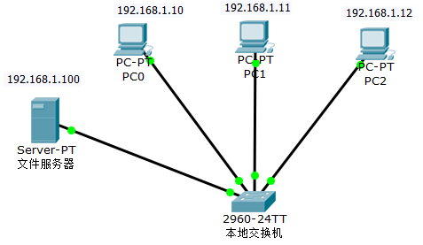
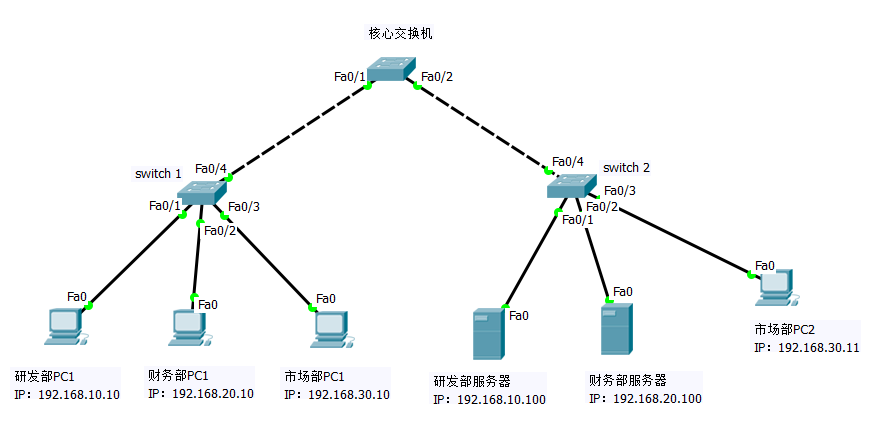
VLAN配置命令
问题导入： "划分VLAN后，不同部门（不同VLAN）的电脑的设备仍然需要相互通信（如研发部需要访问财务部服务器），如何让不同VLAN的设备跨网通信呢？"
答案："配置单臂路由"
如图所示，通过路由器的一个物理接口，使用子接口（逻辑接口,如图中f0/0.1）实现多个VLAN之间的通信。路由器与交换机之间通过 trunk 链路连接，承载所有VLAN的数据。
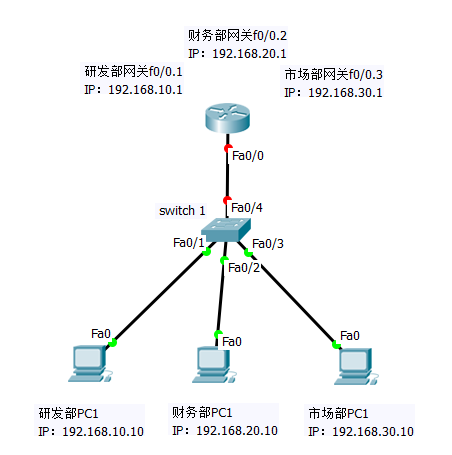
问题导入： "随着公司的发展，极客公司在总部的基础上，创办了分部，总部和分部分属两个网络，如何实现两个网络的互连互通呢?"
如图所示，总部和分部通过网关路由器相互连接，网关路由器通过查询路由转发表，根据目标IP地址，对接收到的IP数据分组进行转发，实现两个网络之间的数据通信
路由转发表的建立方式：静态方式、动态方式
静态方式："由管理员手动在路由器上配置、更新和维护路由条目。"
动态方式："由路由器执行路由协议自动进行路由条目的建立、更新和维护"
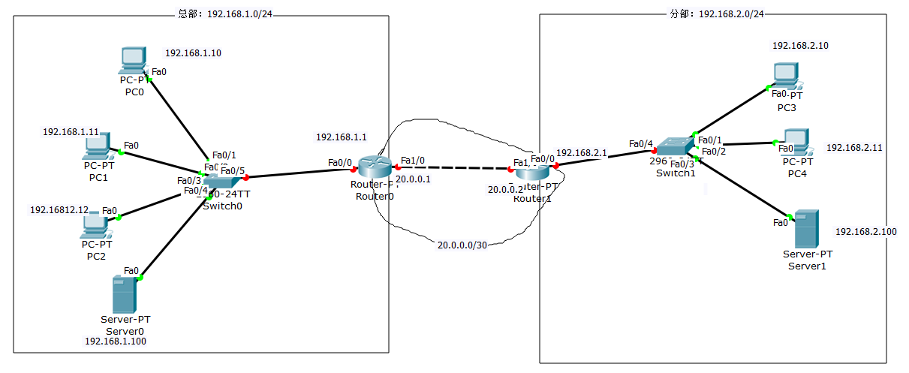
静态路由配置命令
实验报告提交方式：优慕课-计算机网络基础-单元学习-实验-静态路由实验
💡 截止时间：（上次课上课之前）
问题导入： "公司规模进一步扩大，增加了多个分部，网络拓扑变得复杂，链路增减成为常态。手动维护路由表已不现实。怎么办？"
路由器通过运行路由协议自动交换路由信息，计算并维护路由表。
分类："根据作用范围的不同，分为内部网关协议（IGP)和外部网关协议(EGP)"
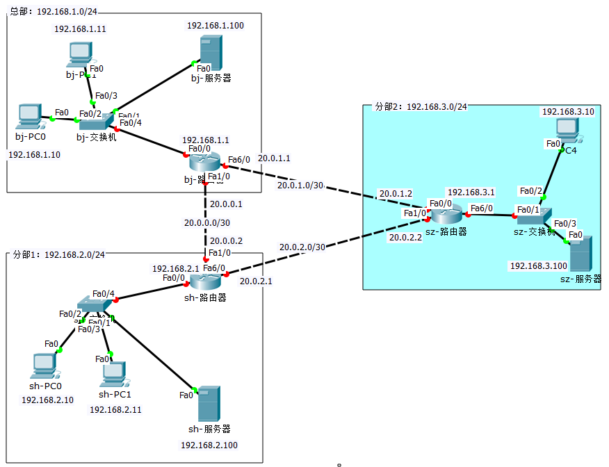
RIP协议配置命令
OSPF协议配置命令
BGP协议配置命令（双AS跨部门场景）
极客公司规模扩大后，北京总部与上海分部需跨地域传输业务数据（如研发部代码、市场部素材），但互联网传输不稳定，因此租用运营商的“专线链路”（如SDH/DDN）。普通路由器默认使用HDLC封装，无法适配专线，且缺乏身份验证，存在链路被冒用的风险，怎么办？。
核心技术：PPP协议（点到点协议），支持专线链路适配+身份验证（PAP/CHAP），保障跨地域连接安全。
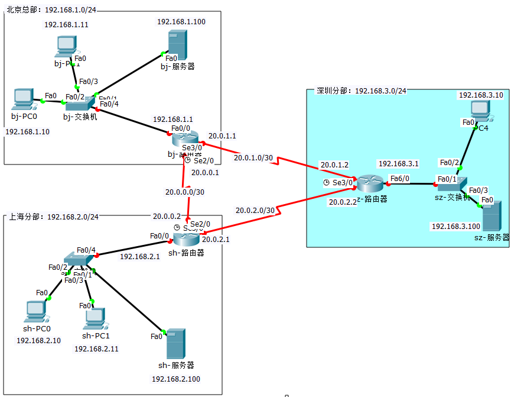
PPP协议核心配置命令（总部路由器）
极客科技场景需求：随着公司员工增加，IT部门每天要处理3类高频问题：①新员工电脑需手动配置IP、网关，耗时且易出错；②研发部需要上传代码到服务器，市场部需要下载宣传素材，缺乏统一文件传输工具；③员工记不住“192.168.1.100”这种IP地址，访问公司官网（内部版）时经常输错。如何通过网络应用配置解决这些问题？
答案：部署DHCP、FTP、DNS、Web、Email 5类核心应用服务，实现“自动配网、高效传文件、易记地址访问”。
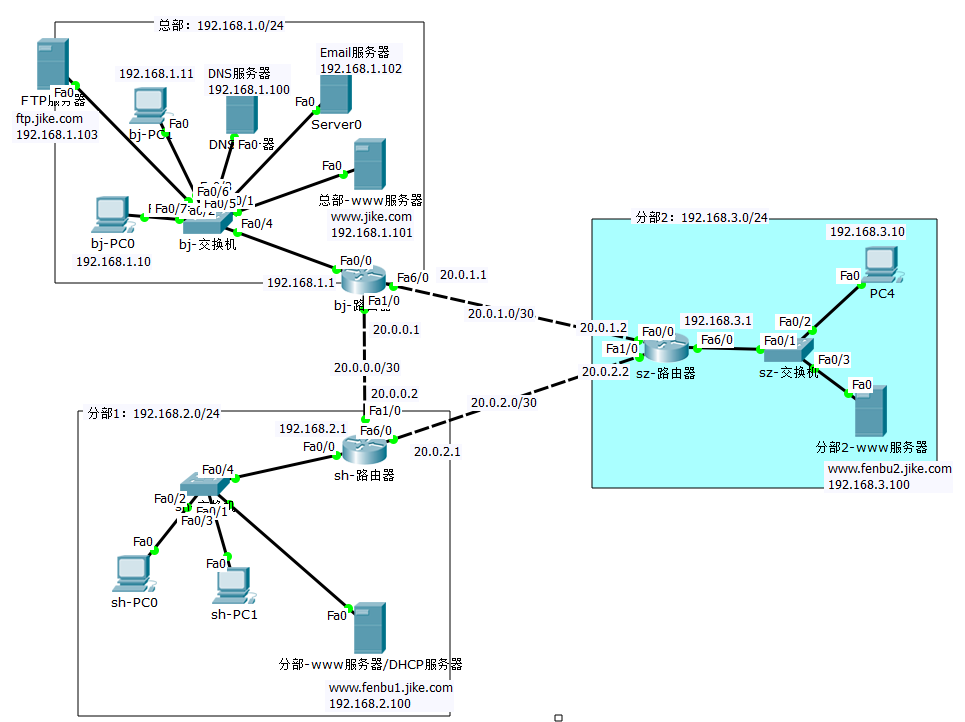
问题导入： "极客公司的财务服务器（192.168.30.10）存储敏感数据，需要禁止市场部（192.168.20.0/24）访问，但允许研发部（192.168.10.0/24）和总部管理端(192.168.1.0/24)访问，如何实现？"
答案："配置ACL（访问控制列表），按源IP/目标IP限制网络访问"
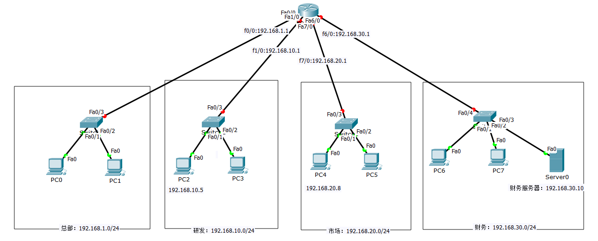
1. 标准ACL配置格式（控制源IP）
2. 扩展ACL配置格式（控制源IP+目标IP+端口）
关键说明：反掩码与子网掩码互补（如/24子网的反掩码为0.0.0.255），eq表示“等于某个端口”（如eq 80对应HTTP服务）。
示例1：标准ACL配置（禁止市场部访问财务网段）
示例2：扩展ACL配置（不允许市场部访问财务服务器）
问题导入： "极客公司员工需要在家远程办公，需访问公司内部服务器（192.168.1.100/24），但互联网传输数据不安全，如何实现安全的远程访问？"
答案："配置VPN（虚拟专用网络），在公网中建立加密隧道，实现安全远程连接"
通过公网（如互联网）建立的"加密专用通道"，让远程设备（如家庭电脑）像在公司内部网络一样访问资源，数据传输全程加密，防止泄露。
本实验采用：IPsec VPN（企业常用，基于IP层加密）
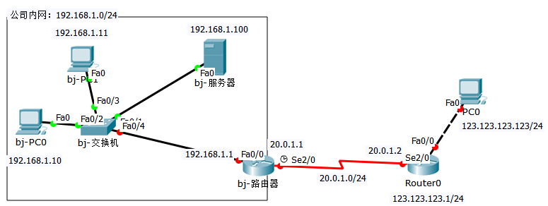
问题导入： "公司内部网络使用私有IP地址，无法直接访问互联网，同时需要保护内部网络结构不被外部知晓，如何解决？"
答案："配置网络地址转换（NAT）技术"
网络地址转换（NAT）通过将内部私有IP地址转换为公共IP地址，实现私有网络与互联网的通信，同时隐藏内部网络结构，提升安全性。常见类型包括静态NAT、动态NAT和端口地址转换（PAT）。
NAT配置命令
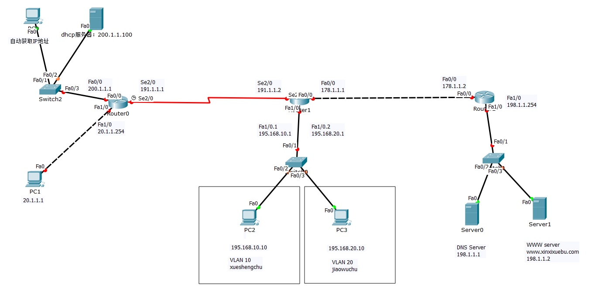
随着公司业务增长，极客公司网络中的数据传输日益复杂。研发部需要访问财务部服务器获取数据，市场部需要与外部客户进行大量数据交换，这些数据在网络中如何传输？出现故障时如何排查？
问题导入："如何直观地查看网络中数据的传输路径和具体内容？当网络出现通信故障时，如何通过分析数据流向来定位问题根源？"
通过专业的网络分析工具，可以捕获和分析网络中的数据报文，查看数据的传输路径、协议类型、源地址、目的地址等关键信息，帮助我们理解网络通信过程和排查网络故障。
局域网孤岛
极客公司创建初期，规模小巧，仅在城市一角设一间简约办公室。几名核心成员怀揣技术理想，无明确分工、并肩协作，在此开启逐梦之路。
问题导入： "办公室内的员工的电脑需要互联互通，怎么办？"
掌握基于Packet tracer的局域网组建方法，PC机的IP配置方法，通过simulation模式观察交换机的数据转发过程
虚拟局域网(VLAN)
随着公司规模扩大，北京总部办公室人员增多，部门划分更细致（研发部、市场部、财务部），所有设备连接在同一台交换机上导致广播风暴和安全隐患。
问题导入： "如何在同一台物理交换机上，将不同部门的设备通信隔离开？"
将一个物理局域网在逻辑上划分成多个不同的广播域（子网络）。
VLAN的核心作用
- 广播控制：限制广播帧只在本VLAN内传播，避免广播风暴
- 安全隔离：不同VLAN设备默认无法直接通信，保护敏感部门数据
- 灵活管理：设备可以根据部门需求划分到不同VLAN，不受物理位置限制
VLAN类型
静态VLAN
由管理员手动将交换机接口分配给特定VLAN
优点：安全可靠，易于监控
缺点：设备移动时需要重新配置
动态VLAN
基于MAC地址、IP地址或用户账号自动分配VLAN
优点：设备移动时自动适应
缺点：配置复杂，需要额外服务器支持
VLAN间通信
不同VLAN之间默认无法通信，需要通过路由器或三层交换机实现互通，这一过程称为"VLAN间路由"。
具体配置方法查看下一阶段“网络互联”中的"单臂路由"
掌握VLAN的配置方法，能够查看VLAN配制结果；点击左上角“智能自测”按钮，完成VLAN项目测试。
网络互联
单臂路由
单臂路由工作原理
- 交换机通过 trunk 链路将带有VLAN标签的数据发送到路由器
- 路由器的子接口根据VLAN标签识别不同网络
- 路由器进行路由转发，实现不同VLAN间的数据交换
- 返回数据通过原路径发送回对应VLAN的设备
单臂路由配置命令示例
下载左侧拓扑，完成单臂路由配置，实现网络连通，并利用ping测试连通性；点击左上角“智能自测”按钮，完成单臂路由项目的测试。
静态路由
当路由表中没有匹配的具体路由条目时，用于转发数据包的路由（通配符0.0.0.0 0.0.0.0）。
总部路由器路由表示例
| 目标网络 | 子网掩码 | 下一跳 | 出口接口 |
|---|---|---|---|
| 192.168.1.0 | 255.255.255.0 | 直接连接 | Fa0/0 |
| 192.168.2.0 | 255.255.255.0 | 20.0.0.2 | Fa0/1 |
| 0.0.0.0 | 0.0.0.0 | 20.0.0.2 | Fa0/1 |
静态路由特点
优点： 简单、精确、不占用网络资源、安全。
缺点： 不能自动适应网络变化。
下载左侧拓扑，完成静态路由配置，并通过ping测试连通性；点击左上角“智能自测”按钮，完成静态路由项目的测试。
内部网关协议(IGP)
用于在同一个自治系统内部(AS)交换路由信息的动态路由协议
网络世界的 “独立行政区”
自治系统（Autonomous System，简称 AS）是互联网中由单一机构（如企业、运营商、高校）管理、遵循统一路由策略的独立网络集合，可以通俗理解为网络世界里的 “独立行政区”—— 有自己的 “管理规则” 和 “对外联络方式”，内部自主管理，外部通过固定 “接口” 与其他 “行政区”（其他 AS）互联互通。
常见IGP协议对比
RIP (路由信息协议)
类型： 距离矢量协议
工作原理： 像"传话游戏"，每个路由器只告诉邻居自己到各网络的距离（跳数）
优点： 配置简单，易于理解
缺点： 最大跳数15跳，收敛速度慢，可能产生路由环路
适用场景： 小型网络，拓扑简单
RIP协议详细介绍OSPF (开放最短路径优先)
类型： 链路状态协议
工作原理： 像"实时共享的电子地图"，所有路由器有相同的全网拓扑图
优点： 收敛速度快，无跳数限制，支持分层设计
缺点： 配置复杂，资源消耗较大
适用场景： 大型复杂网络
OSPF协议详细介绍总部网关路由器路由表 (OSPF)
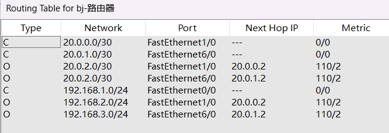
下载左侧拓扑，完成RIP和OSPF协议的配置，并进行连通性实验。完成OSPF实践作业，并撰写报告并通过指定方式提交
点击下载OSPF动态路由实验作业指导书（必做） 点击下载OSPF动态路由实验报告模版作业实验报告提交方式：优慕课-计算机网络基础-单元学习-实验-OSPF实验
💡 截止时间：（上次课上课之前）
外部网关协议(EGP)
BGP协议是典型的EGP类协议。
BGP协议详细介绍动态路由（EGP协议）核心说明
核心目标：理解外部网关协议（EGP）的跨自治系统路由传递原理，了解BGP协议基础配置。
关键知识点：EGP适用场景（不同自治系统之间）、BGP（边界网关协议）、AS号（自治系统号）、BGP邻居（对等体）。
操作要点：配置BGP进程和AS号，建立BGP邻居关系，宣告本自治系统的网段，验证BGP路由传递。
特点：BGP是路径矢量协议，注重路由的“可达性”而非“最短路径”，适用于互联网级路由。
了解BGP的配置，可参考视频进行配置实验，不做考核要求
广域网PPP协议
PPP（Point-to-Point Protocol，点到点协议）是广域网中常用的链路层协议，核心作用：
- 链路适配：支持专线、拨号等多种广域网链路，替代路由器默认的HDLC（仅支持同品牌设备）；
- 身份验证：提供PAP（明文验证，简单）和CHAP（加密验证，安全），防止链路被非法设备接入；
PPP与网络互联的逻辑关系
在极客公司场景中，PPP是“网络互联”的链路基础：
- 第一步：通过PPP配置专线链路（北京总部Serial 2/0 ↔ 上海分部Serial 2/0），确保物理链路能通；
- 第二步：在PPP链路基础上，配置动态路由（如OSPF），实现总部192.168.1.0与分部192.168.2.0的互通；
- 简单说：PPP解决“链路能不能通”，路由解决“数据往哪传”。
验证方法：
- 1. 接口状态验证：执行
show ip interface brief，查看Serial接口状态为“up/up”（表示PPP链路已建立）； - 2. 身份验证：执行
show ppp authentication，查看CHAP验证状态为“SUCCEEDED”（表示验证通过）； - 3. 连通性验证：总部路由器ping分部路由器互联IP（20.0.0.2），能通则PPP链路正常。
实践要求：结合讲解视频，完成左侧网络中北京总部与深圳分部、上海分部与深圳分部的PPP配置。
验证方法：用不同网络中的主机进行互ping操作，看是否能够ping通。
智能自测：点击左上角的“智能自测”，完成PPP项目的测试。
应用配置
实践总要求
按照各应用的实践要求完成实践；点击左侧“智能自测”，完成应用配置项目的自测练习。
DHCP服务配置
DHCP协议详细介绍- 作用：自动给电脑分配IP、网关、DNS，无需手动配置
- 关键参数：IP地址池、子网掩码、默认网关、DNS服务器、租约时间
- 核心工作机制：
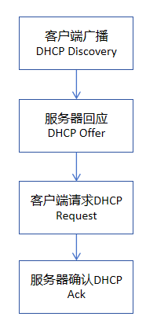
- 单一服务器部署：适用于单个物理子网的小型局域网。部署简单，但存在单点故障风险。
- 多服务器高可用部署：对于中大型网络或要求高可用的环境，建议至少部署两台DHCP服务器。
要使DHCP服务覆盖多个子网，需要特殊配置。
- 使用DHCP中继代理：当DHCP服务器与客户端位于不同子网时，需要在客户端所在子网的路由器或特定服务器上配置DHCP中继代理（也称IP帮助地址）。中继代理负责转发DHCP广播报文，使其能够到达另一子网的DHCP服务器。
路由器DHCP配置
🌐路由器完全可以配置DHCP服务。这实际上是现代路由器一项非常核心且常用的功能，它能自动为网络中的设备分配IP地址
实践要求：结合讲解视频，完成左侧网络的DHCP服务器配置，实现分部1中主机IP的自动配置。
验证方法：电脑设置“自动获取IP”，查看是否拿到配置的IP地址。
DNS服务配置
DNS协议详细介绍- 作用：将易记的域名（如www.geektech.com）转换成IP地址
- 关键操作：配置域名与IP的映射关系
DNS配置命令
实践要求：结合讲解视频，完成左侧网络的DNS服务器配置，具体参数如下：
总部-www服务器的域名：www.jike.com
EMAIL服务器的域名：email.jike.com
FTP服务器的域名：ftp.jike.com
分部1-www服务器的域名：www.fenbu1.jike.com
分部2-www服务器的域名：www.fenbu2.jike.com
验证方法：网络中任意主机通过ping域名都可以访问到对应IP的服务器设备。
FTP服务配置
FTP协议详细介绍- 作用：实现文件上传、下载，方便部门间共享素材
- 默认端口：21（控制端口）
- 关键操作：启用FTP服务、创建登录账号密码
FTP配置命令
实践要求：结合讲解视频，完成左侧网络的FTP服务器配置，添加账户为个人姓名全拼，密码为学号后三位
验证方法：用FTP客户端输入服务器IP、账号密码，能上传/下载文件则成功。
WWW服务配置
万维网www详细介绍- 作用：搭建公司内部网站，展示信息或提供系统访问
- 默认端口：80
- 关键操作：启用HTTP服务、配置网站内容
WWW配置命令
实践要求：结合讲解视频，完成左侧网络的三个www服务器配置，并对各服务器首页内容进行更改，总部改为：welcome to jike's webset! 分部1改为：welcome to jike fenbu1's webset! 分部2改为：welcome to jike fenbu2's webset!
验证方法：浏览器输入http://服务器IP（如http://192.168.1.100）或者域名，能打开网页则成功。
Email服务配置
电子邮件详细介绍- 作用：搭建公司内部邮箱系统，员工间发送邮件
- 关键参数：域名（如geektech.com）、邮件服务器IP
Email配置命令
实践要求：结合讲解视频，完成左侧网络的EMAIL服务器配置，将服务器域名设置为jike.com,添加zhangsan@jike.com和lisi@jike.com两个账号,密码为学号后三位。选择两台电脑设置email client，进行账号和服务器设置
验证方法：用邮件客户端配置账号，能发送/接收内部邮件则成功。
网络安全
实践要求：了解ACL、VPN和NAT的配置方法，下载左侧拓扑，进行相关配置练习，其中NAT留有必做作业，请通过指定方法提交实验报告；点击左侧“智能自测”，完成网络安全项目自测。
防火墙ACL
- ACL分类：标准ACL（控制源IP）、扩展ACL（控制源IP+目标IP+端口）
- 应用方向：inbound（入站，数据进入接口时检测）、outbound（出站，数据离开接口时检测）
- 匹配顺序：ACL规则自上而下执行，一旦匹配立即生效，后续规则不再执行
路由器的"访问规则清单"，通过允许/拒绝特定IP、端口的数据包，控制不同网段间的访问权限，保护内部敏感资源（如财务服务器）。
核心原则：默认拒绝所有，只允许需要的访问（最小权限原则）
编号与ACL类型对应关系：
- 标准ACL（仅控制源IP）：编号 1-99 或 1300-1999
- 扩展ACL（控制源IP+目标IP+端口）：编号 100-199 或 2000-2699
配置原则：标准ACL尽量靠近目标设备，扩展ACL尽量靠近源设备（减少无效数据传输）。
实验设计
拓扑核心信息：路由器连接4个网段，财务服务器（192.168.30.10）需限制访问，禁止市场部访问。
1. 需求1：禁止市场部（192.168.20.0/24）访问财务网段（192.168.30.0/24）→ 用标准ACL（仅控制源IP）。
2. 需求2：禁止研发部（192.168.10.0/24）访问财务服务器 → 用扩展ACL（控制源IP+目标IP+80）。
实验要求
下载拓扑，分别针对"需求1"和"需求2"进行ACL的配置。
验证方法：
- 用市场部电脑（192.168.20.8）ping财务服务器，应不通；访问http://192.168.30.10，应拒绝。
- 用研发部电脑（192.168.10.5）ping财务服务器（192.168.30.10），可以通；访问http://192.168.30.10，不能打开。
- 在路由器执行`show access-lists`，查看规则命中次数。
注意事项：
- ACL编号决定类型：1-99/1300-1999是标准ACL（仅源IP），100-199/2000-2699是扩展ACL（源IP+目标IP+端口），不可混淆。
- 规则顺序：自上而下执行，一旦匹配立即生效，需先配置“允许”规则，再配置“拒绝”规则（默认隐含“拒绝所有”）。
- 接口方向：inbound是“数据进入接口时验证”，outbound是“数据离开接口时验证”，需根据ACL类型选择（标准ACL靠近目标，扩展ACL靠近源）。
VPN虚拟专用网络
- VPN核心价值：公网环境下的加密通信，保障远程访问安全
- IPsec VPN两个阶段：ISAKMP协商（建立安全通道）、IPsec加密（传输数据）
- 预共享密钥：远程客户端和服务器必须使用相同密钥，简单易配置（适合小型企业）
实验设计（极客公司场景）
1. 场景：员工在家用电脑（公网IP：123.123.123.123）远程访问公司内部服务器（192.168.1.100）
2. 配置步骤：
- 公司出口路由器IPsec VPN策略（预共享密钥、加密算法等）
- 员工电脑（Windows）创建VPN连接，输入公司出口路由器IP和预共享密钥
- 连接VPN后，验证是否能访问内部服务器（ping 192.168.1.100 或访问内网网站）
网络地址转换(Network Address Translation,NAT)
- 解决IPv4地址枯竭问题：多个内部设备共享一个公共IP
- 隐藏内部网络拓扑：外部仅能看到公共IP，无法获取私有IP段
- 提升网络安全性：隔绝外部直接访问内部设备，减少攻击面
二、NAT的三种常见类型
- 静态NAT：私有IP与公共IP一对一固定映射（适用于服务器对外提供服务）
- 动态NAT：私有IP从公共IP池中随机获取映射（适用于多设备访问互联网）
- PAT（端口地址转换）：多私有IP共享一个公共IP，通过端口号区分（最常用，如家庭路由器）
二、核心配置组件
- 内部接口：连接私有网络的接口（需配置ip nat inside）
- 外部接口：连接互联网的接口（需配置ip nat outside）
- 地址池：存放可分配的公共IP地址范围（动态NAT/PAT用）
- 访问控制列表（ACL）：定义哪些内部设备可以使用NAT转换
综合实践 - 基础实践
实践目标：整合前期所有基础技术，完成从VLAN划分、路由配置到应用部署、安全增强的全流程实践
项目1：基础网络全流程实践
- 1. 创建VLAN10（研发部）、VLAN20（市场部），配置交换机Access接口和Trunk链路
- 2. 配置单臂路由，实现VLAN10与VLAN20跨网通信
- 3. 部署OSPF动态路由，实现总部（192.168.1.0）与分部（192.168.2.0）互通
- 4. 搭建Web/FTP服务器，确保内网设备可正常访问
- 5. 验证：跨VLAN、跨网段ping通，应用服务可访问
项目2：安全增强型网络实践
- 1. 基于项目1的基础网络，配置ACL规则：禁止市场部访问研发部Web服务器
- 2. 配置IPsec VPN，实现远程设备接入内网访问FTP服务器
- 3. 验证：ACL拦截生效，VPN连接后可正常访问内网资源
- VLAN配置：阶段2 | 单臂路由：阶段3.1 | OSPF路由：阶段3.3
- Web/FTP部署：阶段5 | ACL/VPN：阶段6
综合实践 - 进阶实践（酒店场景）
二、学生设计要求
- 1. 提交完整的网络拓扑图（需标注设备、接口、网段、VLAN）
- 2. 编写详细配置命令（交换机+路由器+服务器）
- 3. 设计3条核心ACL规则（禁止客房访问办公/服务器、允许办公访问服务器、允许VPN访问办公）
- 4. 提交测试报告（含ping结果、应用访问截图、ACL/VPN验证结果）
三、设计思路提示
- 💡 网段规划：避免与公网IP冲突，建议使用192.168.0.0/16私有网段，每个区域子网掩码255.255.255.0
- 💡 VLAN配置：交换机之间需配置Trunk链路，允许所有VLAN通过；接入端口配置为Access模式并划分到对应VLAN
- 💡 PPP配置：参考阶段4，核心路由器Serial接口配置encapsulation ppp和CHAP认证，对接运营商侧IP（20.0.0.2）
- 💡 ACL配置：扩展ACL（编号100-199）部署在路由器连接客房的子接口（入站方向），精准控制源IP+目标IP
- 💡 VPN配置：参考阶段6，核心路由器配置ISAKMP策略和预共享密钥，远程设备连接时输入路由器公网IP（20.0.0.1）